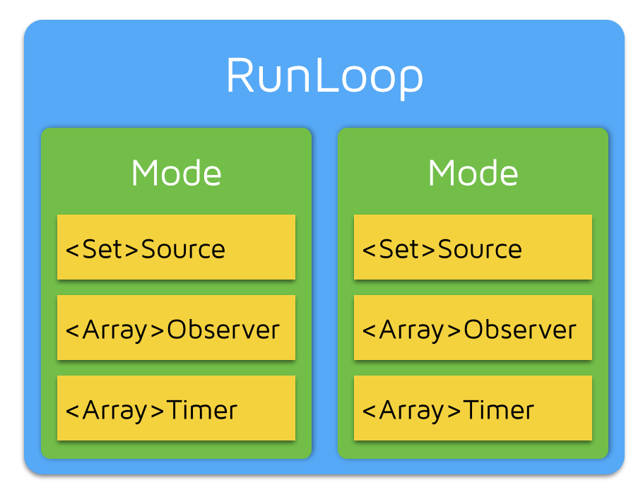

RunLoop 只有main 和 current 不能直接创建
RunLoop 包含多个mode，每个mode又有若干个source/timer/observer（mode item 就叫 事件 吧 未考证）（CF框架下）

RunLoop 每次调用主函数只能指定一个mode，切换时候需要先退出loop，然后重新执行mode进入，这样可以分开不同组事件，不会干扰
source 有两种 0 和 1： 0 事件只有一个函数回调，这类事件会先被标记为待处理然后，手动唤醒RunLoop进行处理；1 事件处理函数回调指针还有个mach_port 它能够主动唤醒RunLoop（更底层的事件）
timer 和NSTimer 是 toll-free bridged 可以混用，特定时间唤醒RunLoop执行回调
observer 当RunLoop 状态发生改变的时候观察者通过回调得到这个变化
//RunLoop 状态
typedef CF_OPTIONS(CFOptionFlags, CFRunLoopActivity) {
kCFRunLoopEntry = (1UL << 0), // 即将进入Loop
kCFRunLoopBeforeTimers = (1UL << 1), // 即将处理 Timer
kCFRunLoopBeforeSources = (1UL << 2), // 即将处理 Source
kCFRunLoopBeforeWaiting = (1UL << 5), // 即将进入休眠
kCFRunLoopAfterWaiting = (1UL << 6), // 刚从休眠中唤醒
kCFRunLoopExit = (1UL << 7), // 即将退出Loop
};
一个事件（mode item）可以同时加入多个mode，单同一个mode多次加入相同item是无效的。如果mode中没有item，RunLoop退出
苹果给出了公开给出了两个mode：default 和 UITracking，这两个mode都被标记为 common
dispath_async 到主线程时候也会唤醒RunLoop 执行block操作